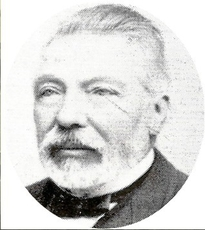

Aimé Joseph TERNYNCK — Né le 03/10/1812 à Cassel — Décédé le 18/04/1887 à Cannes
Aimé Joseph TERNYNCK
Né le 03/10/1812 à Cassel
Décédé le 18/04/1887 à Cannes
Résumé
Aimé Joseph Ternynck naît le 3 octobre 1812 à Cassel, au sein d'une famille de négociants en tissus. En 1842, il s'associe à son frère cadet Henri pour fonder à Roubaix une maison de négoce de tissus sous la raison sociale Ternynck frères.
Son mariage, le 1er juillet 1846, avec Juliette Jacquemin, fille du négociant textile de Saint-Quentin Jean Jacquemin, décide de la suite de sa carrière : son beau-père avait très tôt investi dans l'industrie sucrière, et Aimé est rapidement associé à ses affaires, notamment à la ferme de Rouez, berceau de ce qui deviendra un petit empire du sucre. Le capital sucrier lui vient donc par alliance, non du négoce roubaisien.
Il bâtit ensuite son ensemble par rachats successifs plutôt que par créations. En 1851, il fonde avec son beau-frère Pierre Auguste Million la société en nom collectif Aimé Ternynck & Cie, qui exploite la sucrerie de Chauny dite « fabrique Saint-Momble ». En 1854, il reprend la sucrerie des Michettes à Coucy-le-Château-Auffrique, fondée en 1835 par Pierre Amédée Carette, et la modernise entièrement ; il prend parallèlement des parts dans d'autres sucreries des environs. En 1873, il acquiert celle d'Abbécourt, transformée en râperie rattachée à Chauny. En 1882 enfin, il fonde avec ses fils Paul et Émile la société Ternynck & fils, qui exploite les fabriques de Rouez, Chauny et Nogent-sous-Coucy, les fermes attenantes et les râperies de Vézaponin, Marest-Dampcourt et Abbécourt. Il est chevalier de la Légion d'honneur depuis le 30 juin 1867.
La branche textile reste celle de son frère Henri, qui développe à Roubaix une filature et un tissage de laine ; l'usine du boulevard de Fourmies est aujourd'hui la plus ancienne usine roubaisienne encore debout, reconvertie en 2024 en tiers-lieu d'économie circulaire sous le nom Manufactures Tissel. Après la mort d'Aimé, ses fils poursuivent l'œuvre sucrière — les établissements Ternynck sont distingués à l'Exposition universelle de Chicago en 1893 — et constituent la Société des Sucreries Ternynck, dont les usines de l'Aisne seront ravagées par la Grande Guerre.
Sa fille Lucie Ternynck épouse Adolphe Delemer : ils sont les parents de Marguerite Delemer et les grands-parents maternels de Claude Saint-Léger. Il décède le 18 avril 1887 à Cannes.
Sources :
- données familiales (gedcom)
- base Léonore, Archives nationales (notice L2576060)
- Encyclopédie Picardia, notice Ternynck Aimé
- Archives départementales de l'Aisne, dommages de guerre des sucreries Ternynck (15 R 1738)
- Ateliers Mémoire de Roubaix, archives Ternynck
